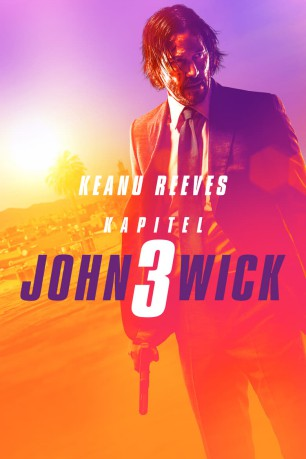
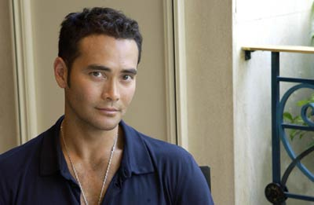
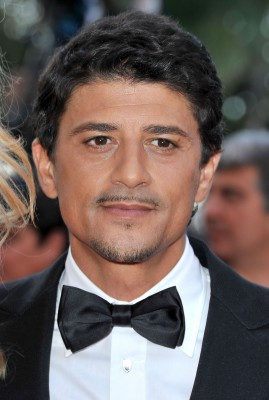
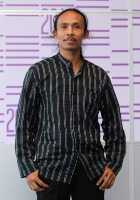

#11731 John Wick: Kapitel 3
Alternativ: John Wick: Chapter 3 - Parabellum (Englischer Titel)
 
 IMDB-Wertung: 7.7 / 10
IMDB-Wertung: 7.7 / 10  Tomatometer: 90
Tomatometer: 90  Metascore: 73
Metascore: 73 
John Wick (Keanu Reeves) befindet sich auf der Flucht. Es sind nicht nur 14 Millionen Dollar auf seinen Kopf ausgesetzt, er hat auch die Regel aller Regeln gebrochen: er hat einen anderen Menschen im Bereich des Continental Hotels umgebracht. Eigentlich müsste er deswegen längst tot sein, doch Hotelmanager Winston (Ian McShane) gewährte ihm für eine Stunde Gnade, bevor alle Folgen eintreten und Wick offiziell aus der Killergemeinschaft ausgeschlossen wird. Wenn John überleben will, muss er sich seinen Weg aus New York City freikämpfen und irgendwo auf der Welt Zuflucht finden. Helfen kann ihm dabei nur seine alte Bekannte Sofia (Halle Berry) und die Frau (Anjelica Huston), die ihn einst aufgezogen und beschützt hat.
Jahr: 2019
Dauer: 131 Minuten
FSK: 18
Land: USA Studio: Summit EntertainmentTonspuren: DTS - ,
Untertitel: Deutsch,
Auflösung: 1080p (1920x800) Größe: 9902 MB
Genre: Action, Thriller, Krimi
Regisseur: Chad Stahelski
Drehbuch: Derek Kolstad, Shay Hatten, Chris Collins, Marc Abrams, Derek Kolstad
Soundtrack: Tyler Bates, Joel J. Richard
Darsteller:
 Keanu Reeves als John Wick
Keanu Reeves als John Wick Halle Berry als Sofia
Halle Berry als Sofia Ian McShane als Winston
Ian McShane als Winston Laurence Fishburne als Bowery King
Laurence Fishburne als Bowery King-  Mark Dacascos als Zero
- Asia Kate Dillon als The Adjudicator
 Lance Reddick als Charon
Lance Reddick als Charon Tobias Segal als Earl
Tobias Segal als Earl Anjelica Huston als The Director
Anjelica Huston als The Director-  Saïd Taghmaoui als The Elder
- Jerome Flynn als Berrada
 Randall Duk Kim als Doctor
Randall Duk Kim als Doctor- Margaret Daly als Operator
 Robin Lord Taylor als Administrator
Robin Lord Taylor als Administrator Susan Blommaert als Librarian
Susan Blommaert als Librarian Jason Mantzoukas als Tick Tock Man
Jason Mantzoukas als Tick Tock Man- Andrea Sooch als Ticket Taker
-  Yayan Ruhian als Shinobi 2
- Tiler Peck als Ballet Choreographer
- Boban Marjanovic als Ernest
- Stefaniya Makarova als Ballet Instructor 3
- Jeff G. Waxman als NY Taxi Driver
- Ahmed Adel als Assassin (uncredited)
- Amanda Anthony als Passerby (uncredited)
- Xan Aspero als Pedestrian (uncredited)
- Paul Bonar als Ruska Roma Sentry (uncredited)
 Kristoffe Brodeur als Assassin (uncredited)
Kristoffe Brodeur als Assassin (uncredited)- Michael Carey als Continental Guard (uncredited)
- Komal Charania als Pedestrian (uncredited)
- David Chen als Continental Guard (uncredited)
- Tiger Hu Chen als Triad (uncredited)
- Justin Clarke als Continental Security #12 (uncredited)
- Renee Compton als Times Square Pedestrian (uncredited)
 Marmee Regine Cosico als Pedestrian (uncredited)
Marmee Regine Cosico als Pedestrian (uncredited)- Kay Day als Switch Board Operator (uncredited)
- Robbie DeRaffele als Russian Ruska (uncredited)
- Ryan Funigiello als Driver (uncredited)
- Nimo Gandhi als Taxi Driver (uncredited)
- Les Gardonyi als Train Passenger (uncredited)
- Khalid Ghajji als Foundry Guard / Berrada Street Guard (uncredited)
- Christian A Guerrero als Russian Assassin (uncredited)
- Nicole Michele Guilbault als Switch Board Operator (uncredited)
- Jarrell Hall als Assassin (uncredited)
 Rosemary Howard als Library Patron (uncredited)
Rosemary Howard als Library Patron (uncredited)- Remi Pann Irene als Pedestrian (uncredited)
- Stephen Koepfer als Sambo Instructor (uncredited)
- Suzanne LaChasse als Commuter (uncredited)
- Kelly Rae LeGault als Switchboard Operator #2 (uncredited)
- Bob Leszczak als Harried Commuter (uncredited)
 Faith Logan als Girl in Park (uncredited)
Faith Logan als Girl in Park (uncredited)
Datei: X:\FSK18-Collections\John Wick\John Wick Kapitel 3 (2019, FSK18, 1920x800).mkv seit 14.09.2019
Festplatte: FSK18
 Alle Filme aus Gruppe 'FSK18-Collections\John Wick'
Alle Filme aus Gruppe 'FSK18-Collections\John Wick'